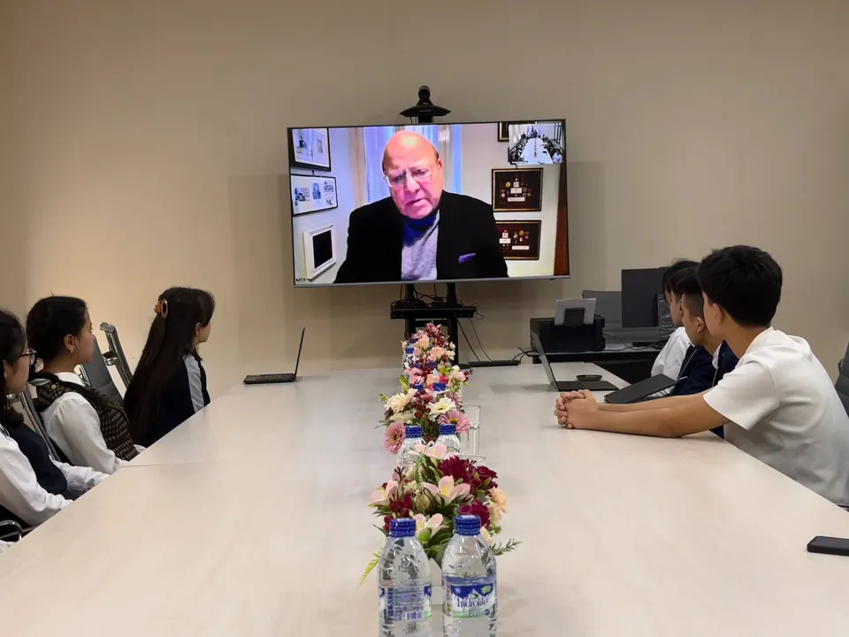
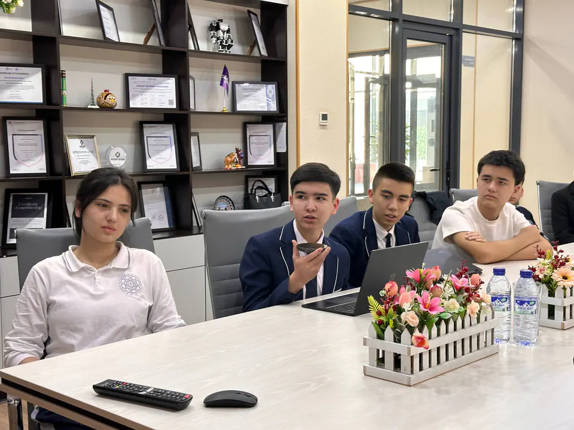
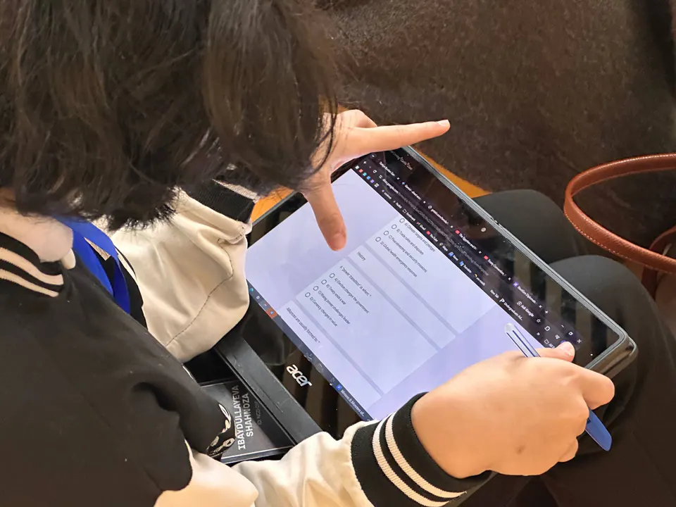
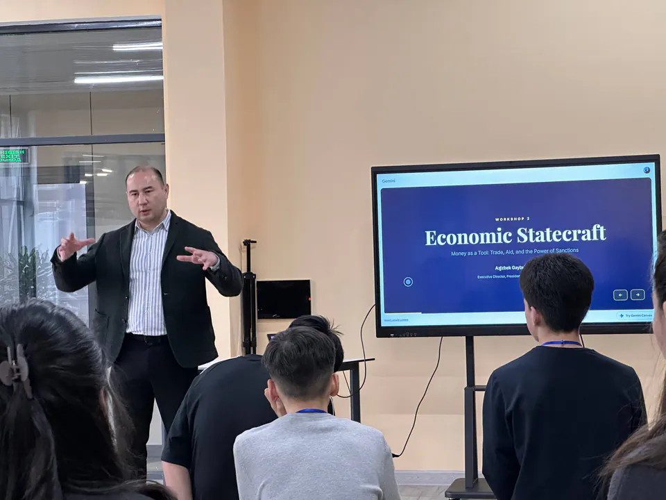
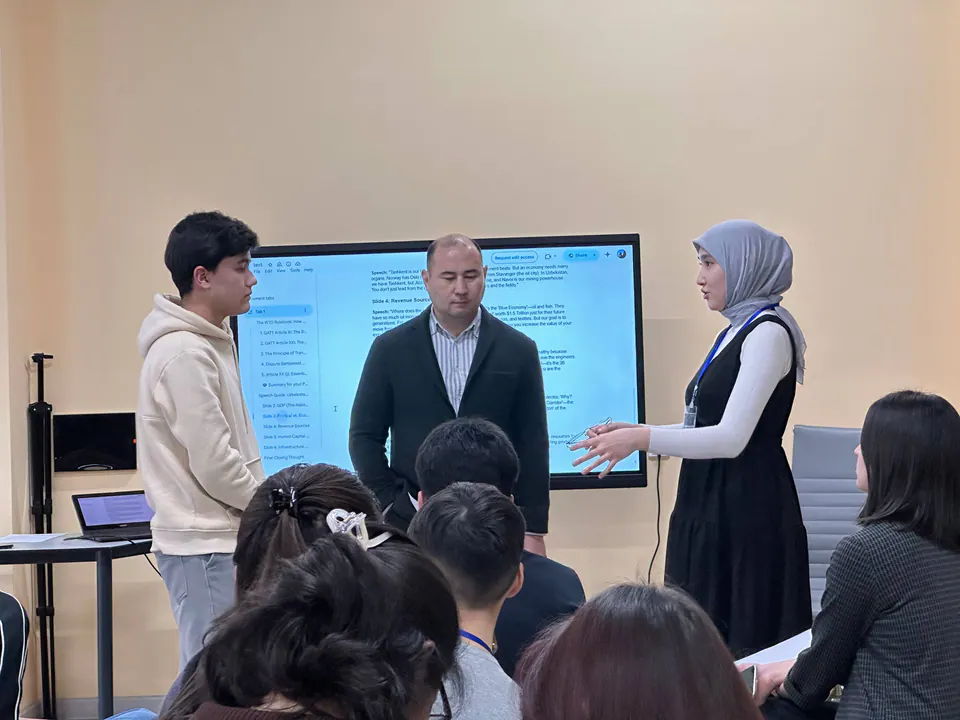
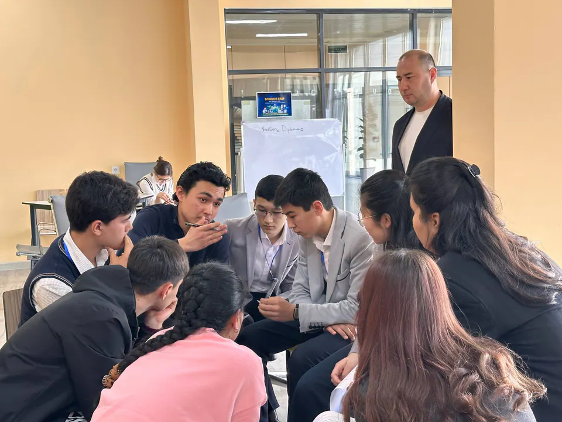
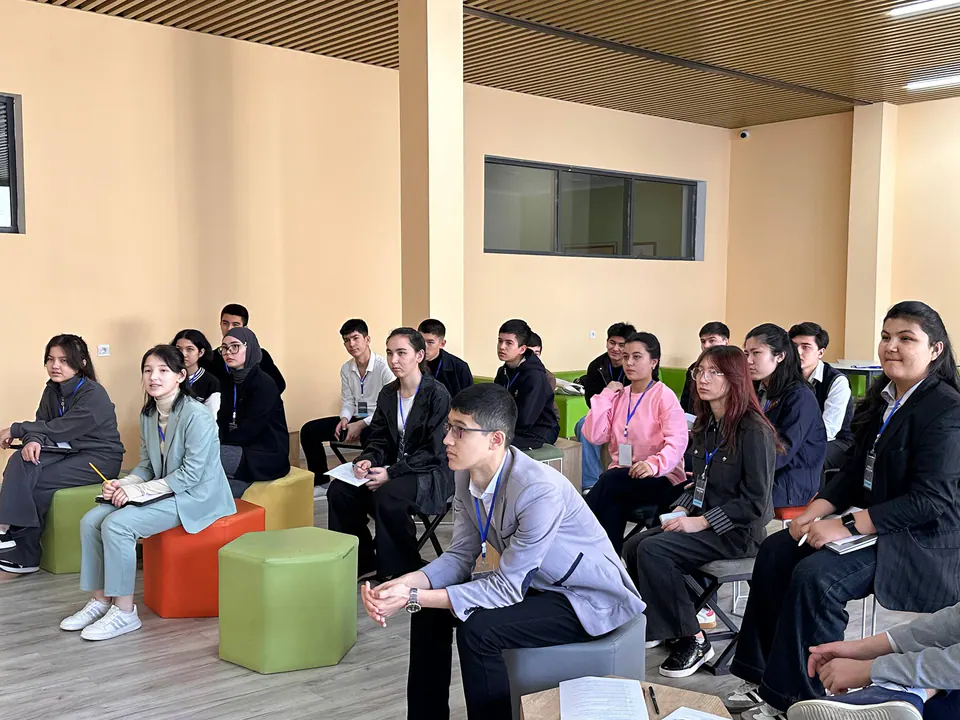
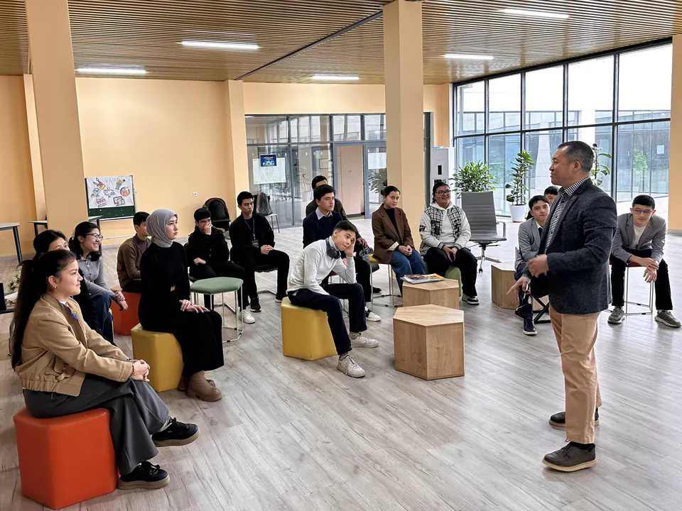
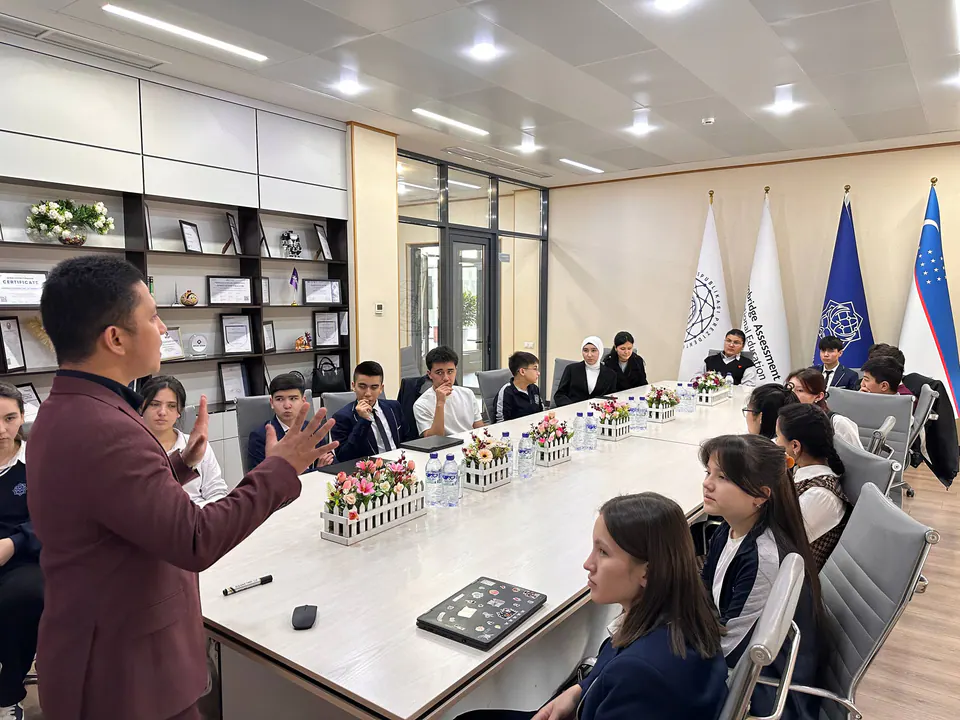
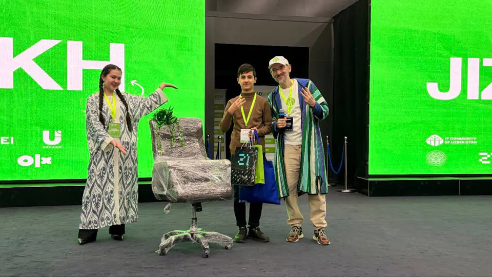

NextGen Diplomats for Global Futures
With SIOI (United Nations Association of Italy) · Honorary advisor: Prof. Emilio Iodice
- Role
- Founder (NextGen Diplomats for Global Futures)
- Organization
- Guidebook partners: SIOI/UNA Italy, Ministry of Preschool and School Education, Agency for Specialized Educational Institutions, Presidential Schools, IT Community of Uzbekistan, Youth Affairs Agency
- Dates
- Feb 2026 – Present


Summary
- Role
- Founder, Feb 2026–present
- With
- SIOI (UNA Italy), with Prof. Emilio Iodice as honorary advisor. Guidebook partners: the Ministry of Preschool and School Education, the Agency for Specialized Educational Institutions, the Youth Affairs Agency, the Presidential Schools and the IT Community of Uzbekistan.
- What I did
- Brought the SIOI course to Jizzakh.
- Ran five free workshops (22 Feb–16 Mar 2026), most built around a simulation and a debrief.
- Wrote a guidebook so other schools can run the program, and studied the results.
- Result
- Knowledge rose from 68% to 89% and confidence from 4.05 to 4.65 out of 5 (14 students who took both tests). Four teachers marked the written answers blind. The Agency for Specialized Educational Institutions plans to use the guidebook in its schools, and we’re working with the Youth Affairs Agency and the Ministry of Education and Science (formerly the Ministry of Preschool and School Education) to take it nationwide.
- What I learned
- When teachers marked the answers blind, our results got smaller. I trust the smaller numbers more.
After Rome, I brought the experience home. NextGen Diplomats for Global Futures is a five-workshop program built around a structured diplomacy guidebook, with Prof. Emilio Iodice as our honorary advisor.
The story
In Rome, I was one of 14 students from Uzbekistan’s Presidential Schools, one from each region. Before the course ended, I asked SIOI whether we could run the same program in Jizzakh. They agreed, and Prof. Emilio Iodice became our honorary advisor. Back home, 47 students applied in six days.
Our principal, Azizbek Gaybullayev, led the first two workshops, on negotiation and on economics in global affairs. Our history teacher, Komiljon Urazov, ran a “Council of the Ages”, where teams played historical leaders facing today’s world. Shavkat Karimov of the IT Community of Uzbekistan and guest speakers ran a full-day event on AI, cybersecurity and digital power. Our English teacher, Ezra Nicolo P. Antonio, closed with strategic communication: teams represented countries and competed to build the biggest alliance. The program ended with a Q&A with Prof. Iodice. Then I wrote a guidebook so other schools can run it, and tested whether it worked (see Research).
22 Feb – 16 Mar 2026 · Jizzakh
From Rome to Jizzakh
During SIOI’s course, I agreed with SIOI to bring the program to Uzbekistan as NextGen Diplomats for Global Futures, and later wrote a guidebook to build diplomatic skills among young people in Uzbekistan and beyond. Prof. Emilio Iodice became our honorary advisor and mentored us throughout the journey. We ran the same kind of program in Jizzakh as the one we had taken part in in Rome. Our five workshops were led by:
- Azizbek GaybullayevPrincipal of the Presidential School in Jizzakhdeep expertise across business, diplomacy, economics, and AI
- Komiljon UrazovHistory teacher at the Presidential School in Jizzakhsharp perspective on world order shifts and the lessons of history
- Shavkat KarimovHead of IT Community Uzbekistan, former Microsoft manager and head of SEO, startup founderbringing real experience in technology, innovation, and AI
- Ezra Nicolo P. AntonioCambridge-system ESL educatorpractical training in clear speaking, persuasive messaging, and communication
- Prof. Emilio Iodicedecorated American diplomat, Presidential historian, and award-winning authorwith over three decades of experience in diplomacy, public service, and leadership, served in key U.S. missions across the world and worked at senior levels within the U.S. government, contributing across multiple administrations




The Guidebook
An 88-page manual that turns our five workshops into a program any school can run, with session plans, facilitator scripts, printable simulation materials, a participation rubric, and a before-and-after survey. Every session was first run with our first cohort at the Presidential School in Jizzakh, where 31 students attended at least one workshop, and then revised.
- 88
- pages
- 5
- workshops
- 31
- students attended at least one workshop
- 10 h
- of contact time


“Leadership is not conferred by age or by title. It is demonstrated by people who see something missing and decide to build it.”
Professor Emilio F. Iodice, honorary advisor
In a pre- and post-test (14 students took both), knowledge scores rose from 68% to 89%, total scores from 55% to 70%, and confidence from 4.05 to 4.65 out of 5. To keep the results honest, four teachers marked the written answers blind. We developed this Guidebook with the help of SIOI/UNA Italy, the Ministry of Preschool and School Education, the Agency for Specialized Educational Institutions, Presidential Schools, the IT Community of Uzbekistan, and the Youth Affairs Agency. The Agency for Specialized Educational Institutions plans to use the guidebook in its schools, and we are working with the Youth Affairs Agency and the Ministry of Education and Science to take it nationwide.






Gallery
More moments










